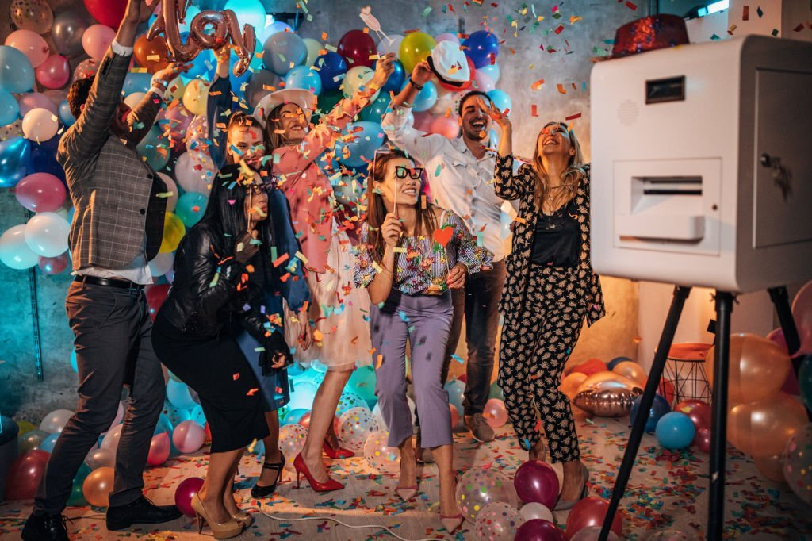

Quick answer: A wedding photo booth is worth it when you want an interactive reception activity for guests of all ages, personalized 2×6 or 4×6 print favors guests actually keep, and a full digital album of studio-lit guest portraits alongside your wedding photographer's coverage.
Planning your wedding in the San Francisco Bay Area is a journey filled with design choices, venue walkthroughs, and timeline decisions. While your wedding photographer captures the ceremony and formal milestones, a professional wedding photo booth rental gives guests a dedicated place to laugh, pose together, and take home an instant keepsake.
Here are the four biggest reasons couples add an open-air DSLR photo booth to their reception, plus how to choose your print format and keepsake options.
1. The Ultimate Icebreaker for Multi-Generational Guests
Weddings bring together families, high school friends, college roommates, and coworkers—many of whom have never met before. Cocktail hour and early reception can sometimes feel slightly formal as groups mingle.
A photo booth is the ultimate social icebreaker. There is something magical about putting on a ridiculous pair of giant sunglasses or holding a witty sign that instantly melts away social barriers. It encourages your college friends to strike poses with your grandparents, creating lighthearted interactions that carry over onto the dance floor.
2. Premium, Customized Keepsakes (The Perfect Favor)
Many traditional wedding favors—like custom matches, personalized mints, or packaged sweets—are often left behind on the tables or thrown away.
A photo print is a personalized, physical favor that guests actively treasure. By utilizing a professional dye-sublimation printer, a high-quality photo booth delivers dry, smudge-free lab-quality prints in seconds. Whether you choose a classic 2 × 6 strip or a 4 × 6 print, guests put them on their refrigerators, frame them on their office desks, and look back at them for years. You can also add an optional scrapbook service ($99) where guests slide in a copy of their print and write a handwritten message, or a complete photo album ($49) that you'll cherish after the celebration.
| Option | Included or Add-on | Best For |
|---|---|---|
| 2 × 6 Photo Strip | Included in $899 Glam Package (unlimited prints) | Classic multi-pose photo booth feel; fits easily into bookmarks, fridge magnets, and guestbook scrapbooks |
| 4 × 6 Postcard Print | Included in $899 Glam Package (unlimited prints) | Larger portrait layout that showcases custom wedding monograms, florals, and big group shots |
| Scrapbook Service | Optional add-on ($99) | Interactive guestbook—guests place an extra print into the book and sign a note next to their photo |
| Photo Album with All Pictures | Optional add-on ($49) | A physical album of the event's prints ready to flip through on your coffee table |
3. Beautiful, Studio-Quality Portraits of Your Guests
Your primary wedding photographer is incredibly busy focusing on you—the couple. They are capturing the walk down the aisle, the first kiss, the formal portraits, and the speeches. They simply don't have the time to take high-quality portraits of all your 100+ guests.
An open-air booth equipped with a professional DSLR camera and a studio strobe flash acts as a secondary mini-portrait studio. It captures your guests looking their absolute best under professional lighting. A few days after the wedding, when you receive the downloadable Google Photos digital album, you will have a full archive of your friends, relatives, and family members smiling, laughing, and celebrating your day.
4. Interactive Entertainment During Natural "Downtime"
Even the most meticulously planned weddings have natural transitional periods. During room turnovers, while you are taking sunset portraits, or during the early stages of dancing, some guests aren't ready to dance but want to remain active.
An open-air photo booth serves as a primary hub of interactive entertainment. It gives non-dancers a fun activity to engage in and ensures your reception remains dynamic and energetic from the start of cocktail hour to the final send-off. With instant QR code downloads, guests can save the digital files directly to their phones to share on social media immediately, building excitement in real-time.
Wedding Photo Booth Benefits FAQs
Do we need a photo booth if we already hired a wedding photographer?
A wedding photographer focuses on ceremony moments, couple portraits, and candid documentary coverage, while an open-air photo booth acts as a dedicated portrait station with studio lighting where guests can step in with friends and family throughout the reception and print a copy on the spot.
Can photo booth prints replace traditional wedding favors?
Yes. Custom 2 × 6 photo strips or 4 × 6 prints personalized with your names, wedding date, and colors double as reception entertainment and a personalized keepsake guests take home.
Should we choose 2 × 6 photo strips or 4 × 6 prints for our wedding?
Both formats are included in Handsome Photobooth's $899 three-hour Glam Package. Classic 2 × 6 strips have a nostalgic multi-pose layout that fits easily into a guestbook scrapbook, while 4 × 6 prints offer a larger postcard format that frames well on a desk or refrigerator.
Planning Your Wedding & Ready to Choose a Vendor?
To make sure your photo booth fits seamlessly into your big day without any added stress, keep these essential planning tips in mind:
- Check your timeline: Learn when the best time is to keep the booth active in our Wedding Photo Booth Timeline Guide.
- Compare technical specs: Ensure your vendor uses high-quality cameras and lights by reading our checklist on How to Choose a Bay Area Photo Booth Vendor.
- Confirm venue logistics: Share our Wedding Photo Booth Setup Checklist with your coordinator to plan space, power, and load-in.
- Analyze your budget: See our published package and add-on pricing in the Bay Area Wedding Photo Booth Cost Guide.
At Handsome Photobooth, our $899 three-hour Glam Package includes professional DSLR portraits, unlimited 2×6 or 4×6 instant prints, QR downloads, over 70 curated props, an on-site attendant, and custom-designed templates tailored to your wedding style.
Explore our full Bay Area Wedding Photo Booth Rental package, and check our availability for your date!